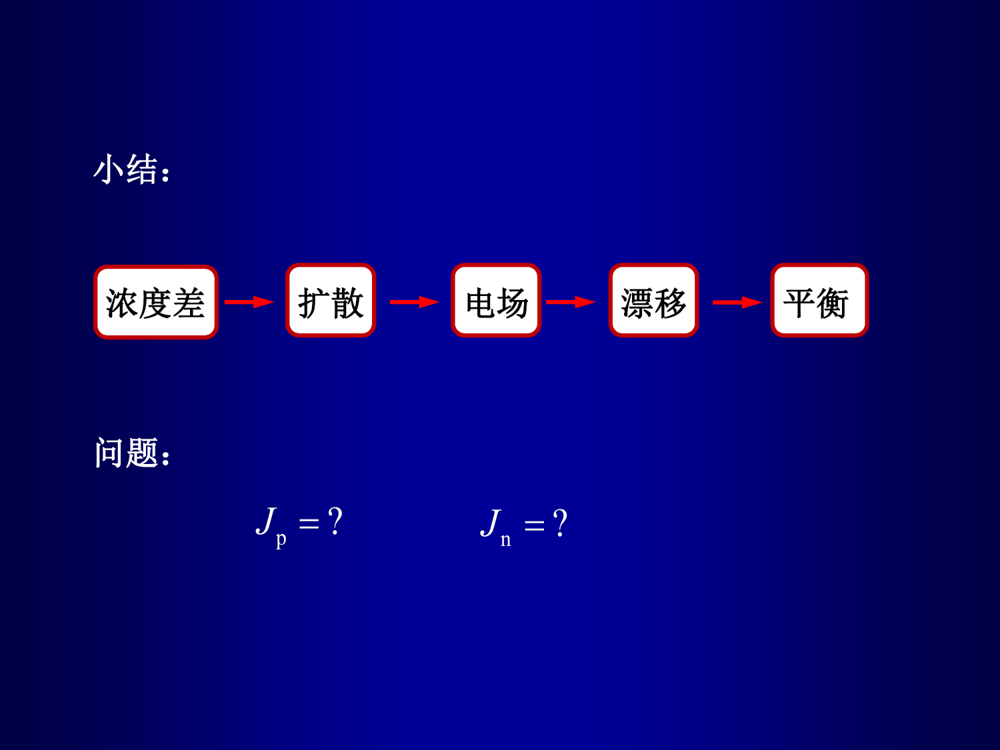

第 2 章 · PN 结
2.2 PN 结空间电荷区的形成
考纲第 2 条。用"浓度差 → 扩散 → 留下电离杂质 → 产生内建电场 → 漂移与扩散抵消"这条链讲清空间电荷区的来源，以及平衡浓度的定量计算。
考纲 2-2）
一句话抓住
浓度差 → 扩散 → 电场 → 漂移 → 平衡。
电离杂质不能动，所以载流子扩散走了、它们被留在原地形成净电荷区——这就是空间电荷区；净电荷区产生的电场又反过来阻止继续扩散，直到净电流为零。
1. 四步逻辑链（必须能完整复述）#
第 1 步：先确认电中性条件。 扩散之前 P 区、N 区各自电中性：
pp0=NA,nn0=ND
由质量作用定律得平衡少子浓度：
np0=NAni2,pn0=NDni2
由于 ni≪NA,ND，多子与少子相差好几个数量级。
第 2 步：载流子有浓度梯度，而电离杂质不能动。 空穴从 P 区向 N 区扩散，电子从 N 区向 P 区扩散（两者形成的扩散电流方向相同，都由 P 区指向 N 区）。电离受主 NA−、电离施主 ND+ 被晶格固定，无法跟随。
第 3 步：电中性被打破，形成净电荷区。 P 区一侧留下带负电的电离受主，N 区一侧留下带正电的电离施主；这两片等量异号的电荷区就是空间电荷区。
第 4 步：内建电场的方向由净正电荷区指向净负电荷区，即从 N 区指向 P 区。它使空穴向 P 区漂移、电子向 N 区漂移——漂移方向与扩散方向相反。
随着扩散进行，空间电荷区变宽、内建电场增强、漂移电流增大；当漂移电流与扩散电流大小相等方向相反时，净电流为零，达到平衡，空间电荷区宽度稳定。
图 2.2-1 空间电荷区形成的四步链条。注意第 4 步中内建电场的指向：由净正电荷区（N 侧）指向净负电荷区（P 侧）。
图中与公式中的每个量
- NA —— 受主杂质浓度（cm−3，也等于 P 区平衡多子浓度 pp0）
- ND —— 施主杂质浓度（cm−3，也等于 N 区平衡多子浓度 nn0）
- np0 —— P 区平衡少子（电子）浓度（=ni2/NA）
- pn0 —— N 区平衡少子（空穴）浓度（=ni2/ND）
- ni —— 本征载流子浓度（硅 1.0∼1.5×1010 cm−3，按卷首给定值取）
- NA− —— 电离受主（固定在 P 区晶格，带负电）
- ND+ —— 电离施主（固定在 N 区晶格，带正电）
- E —— 内建电场（方向 N 区 → P 区，大小在结面处最大）
- q —— 电子电荷量（1.6×10−19 C）

课件原图：《半导体器件与物理B-II（2-1）》第 11 页。老师把本节压成这五个词，最后一页还留了两个问题 Jp=?、Jn=?——正是下一节要算的东西。
2. 平衡浓度的定量计算#
只要知道掺杂浓度，四个平衡浓度全部可算：
nn0=ND,pp0=NA,pn0=NDni2,np0=NAni2
审题第一问通常是"算出四个平衡浓度"
这类小题看似送分，却是后面所有计算的基础，而且单位和数量级最容易写错。写的时候把量级标出来（例如 pn0=2.25×105 cm−3），判卷时一眼就能看出你有没有算对。
3. 老师的"四种情形"清单#
课件明确指出，这套分析方法要能推广到四种情形：
| # |
情形 |
关键差异 |
| 1 |
普通均匀掺杂突变 PN 结 |
标准情形，见 §2.4 |
| 2 |
同一掺杂类型的突变结（ND1ND2 或 NA1NA2） |
没有 PN 结势垒，但仍有内建电场和耗尽区，分析方法完全一致 |
| 3 |
大注入效应 |
关键是电中性条件 nn=pn，见 §2.11 |
| 4 |
缓变基区晶体管（基区掺杂单调变化） |
内建电场的来源，见第 3 章 |
题会怎么出
- 简答："说明 PN 结空间电荷区是如何形成的"——要求四步完整并明确内建电场方向。漏掉"电离杂质不可移动"、或把方向写成 P→N，是典型失分点。
- 填空/计算：给定 NA,ND,ni 写出四个平衡浓度；或反过来由少子浓度反求掺杂浓度。
- 同型结小题：问"有没有耗尽区？有没有内建电场？有没有势垒？"——答案是有、有、没有。
- 浓度分布图读数：给出 logn、logp 随 x 的分布，要求标出 pp0,np0,pn0,nn0 与耗尽区位置。
4. 易错点#
- 内建电场方向：由净正电荷区指向净负电荷区，即 N→P；写成 P→N 是最常见的错误。
- 把电离杂质当成载流子：空间电荷区的电荷是电离杂质，不是自由载流子。
- 误以为平衡时"什么都没发生"：平衡时净电流为零，但扩散流与漂移流都很大且方向相反，这一点在 §2.5 展开。
- 少子浓度分子写成 ni：正确是 ni2。
5. 自测#
自测
- 复述空间电荷区形成的四步，并指出哪一步决定内建电场的方向。
- 硅 NA=1017 cm−3、ND=1015 cm−3，ni=1.0×1010 cm−3，求四个平衡浓度。
- 两个同为 N 型、浓度不同的区相邻（ND1>ND2），是否存在内建电场？方向如何？
解析要点
- 四步见 §1；第 3 步（形成带正电的 N 侧与带负电的 P 侧）决定方向。
- pp0=1017；np0=1020/1017=103 cm−3；nn0=1015；pn0=1020/1015=105 cm−3。
- 有内建电场：高掺杂侧扩散走得多、留下的电离施主（正电）相对更多，电场由高掺杂侧指向低掺杂侧。不存在 PN 结势垒，但仍有耗尽区与内建电势差。